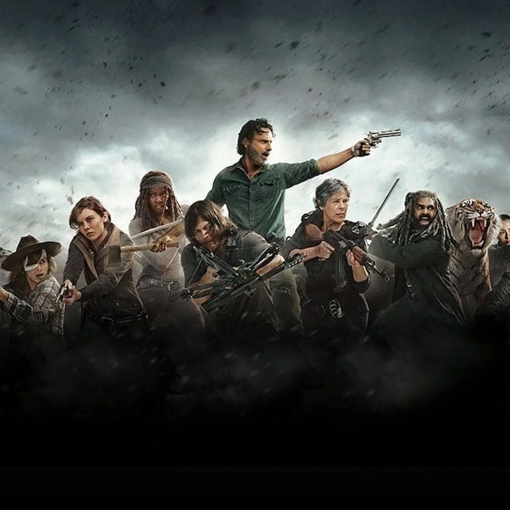

01
Rick Grimes
Policial e líder que tenta proteger sua família e seu grupo.
UM MUNDO DE SOBREVIVÊNCIA
Conheça a história, os personagens, as temporadas e curiosidades de uma das séries de zumbis mais conhecidas.

A HISTÓRIA
The Walking Dead é uma série baseada nos quadrinhos criados por Robert Kirkman. A história acompanha sobreviventes tentando encontrar segurança em um mundo transformado por uma epidemia de mortos-vivos.
Além dos walkers, os personagens enfrentam conflitos, perdas, escolhas difíceis e outros grupos de sobreviventes.
SOBREVIVENTES
Alguns dos personagens mais marcantes da série.
Policial e líder que tenta proteger sua família e seu grupo.

Sobrevivente habilidoso, conhecido por sua besta e lealdade.

Guerreira determinada e uma grande aliada do grupo.

Uma personagem que muda muito e se torna uma forte sobrevivente.
LINHA DO TEMPO
Clique nos números para ver um resumo.
ESCOLHA UMA TEMPORADA
Selecione um dos números acima.
VOCÊ SABIA?
A série foi inspirada nos quadrinhos de Robert Kirkman.
Os mortos-vivos são chamados principalmente de walkers.
A história mostra pessoas diferentes tentando trabalhar juntas.
THE WALKING DEAD
Mas a esperança também.
CRÉDITOS DAS FOTOS
Fotos de Andrew Lincoln, Norman Reedus, Danai Gurira e Melissa McBride: Wikimedia Commons / Gage Skidmore e outros autores, sob licenças Creative Commons. Foto do elenco: Gage Skidmore, Wikimedia Commons.